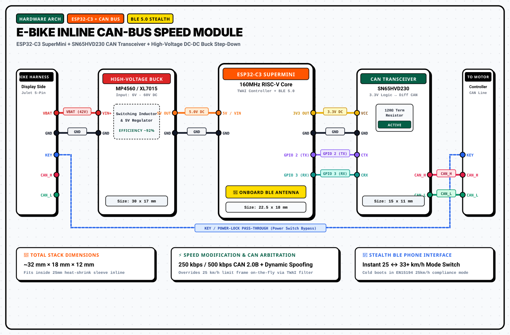

Speed unlock
for e-bikes.
Your e-bike just got de-restricted. Raise the assisted cutoff from 25 km/h → 33+ km/h in one inline harness. Zero wires cut.
0x7E calculated on-the-fly 🤖pio run -e esp32-c3-supermini -t upload
$ pio run --target upload --environment esp32-c3-supermini
# 2. Inline MITM transparent serial proxy online
$ tenwayout-proxy --mode intercept --target 33kmh --interface twai-can
✓ Intercepting UART 0x59 telemetry: spoofing limit byte 0x21 (33 km/h), CRC 0x7E verified
Engineered for Speed & Stealth
One Inline Cable
5-pin Julet T-harness snaps inline between your handlebar display and motor controller. Unplug anytime to return to 100% factory original state.
Cold-Boot Safe
boot_mode = LEGAL_25KMH defaults on power-up for roller test bench inspections. Unlock on-demand via smartphone Web BLE or handlebar brake gesture.
Real Speed Display
ESP32-C3 dynamically recalculates 0x59 UART checksums so your handlebar OLED display shows true GPS speed while assisting up to 33+ km/h.
Web BLE Companion
No App Store installation needed. Open kimishiba.github.io/tenwayout-web in Chrome to configure speed limits and read live telemetry.
Inline MITM Packet Flow
TenWayOut intercepts bidirectional serial packets between the handlebar display (HMI) and the Mivice motor controller, adjusting cutoff limits without flashing motor firmware.
Wireless Smartphone Companion
Connect directly to your bike over Web Bluetooth (BLE 5.0) with Chrome on Android, Mac, or PC, or Bluefy on iOS.
Instant Browser Connectivity
Zero app store downloads. Pair directly over Bluetooth LE. All speed thresholds and boot preferences are saved into ESP32-C3 onboard non-volatile flash (NVS).
Dynamic Speed Scaling
Adjust assisted limits smoothly anywhere between 20 km/h and 38 km/h. The module calculates live checksums on the fly so the display speedometer remains calibrated while assisting past factory restrictions.
Persistent EEPROM Config
Choose whether you want your bike to always start in Legal Mode on power-up (stealth default) or remember your last unlocked setting across battery power cycles.
Wiring Topology & Pinout
Built for standard 5-pin Julet waterproof connectors for clean, reversible inline installation.

Julet 5-Pin Connector Pinout
| Pin / Color | Function | Destination |
|---|---|---|
| Pin 1 (Red) | VBAT (36V–48V) | Buck Converter VIN+ |
| Pin 2 (Black) | GND (0V) | Common System GND |
| Pin 3 (Blue) | Key / Power Lock | Display Passthrough |
| Pin 4 (Green) | Display TX / CAN_H | ESP32 GPIO 4 / CAN_H |
| Pin 5 (Yellow) | Display RX / CAN_L | ESP32 GPIO 5 / CAN_L |
Bill of Materials (BOM) & Purchasing
Build your own module with readily available off-the-shelf components. Total hardware cost is approximately €10 – €12.
| Component | Specifications | Cost | Purchasing Vendors |
|---|---|---|---|
| ESP32-C3 SuperMini | 160MHz RISC-V, Built-in BLE 5.0, Wi-Fi, TWAI CAN controller | ~€2.50 | TinyTronics.nl Amazon.nl AliExpress |
| SN65HVD230 CAN Board | 3.3V CAN transceiver IC with onboard 120Ω termination | ~€1.20 | TinyTronics.nl Amazon.nl AliExpress |
| MP4560 / XL7015 DC-DC Buck | High-voltage step-down converter (36V–48V DC input → 5.0V output) | ~€1.50 | TinyTronics.nl Amazon.nl |
| Julet 5-Pin Waterproof Cable | Male-to-female inline extension harness (prevents cutting stock bike wiring) | ~€5.00 | Amazon.nl Bol.com |
| 25mm 3:1 Heatshrink Tubing | Adhesive-lined waterproof polyolefin protective enclosure sleeve | ~€1.00 | Amazon.nl Bol.com |
Handlebar Button & Brake Gestures
Switch between Legal Mode (25 km/h) and Unlocked Mode (33 km/h) on the fly using stock bike controls without reaching for your phone.
Enable Unlocked Speed Assist
-
1Hold down the Brake Lever firmly while stationary.
-
2Toggle the Headlight Button 3 times within 3.5 seconds.
-
3Display briefly flashes 33.0 to confirm unlock.
Return to Legal Stock Mode
-
1Hold down the Brake Lever firmly while stationary.
-
2Toggle the Headlight Button 3 times within 3.5 seconds.
-
3Display briefly flashes 25.0 to confirm legal mode.